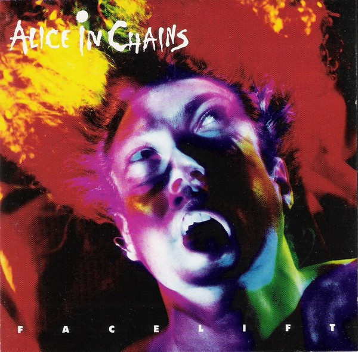
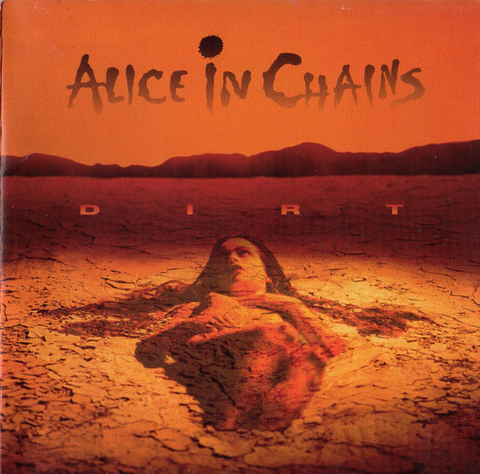
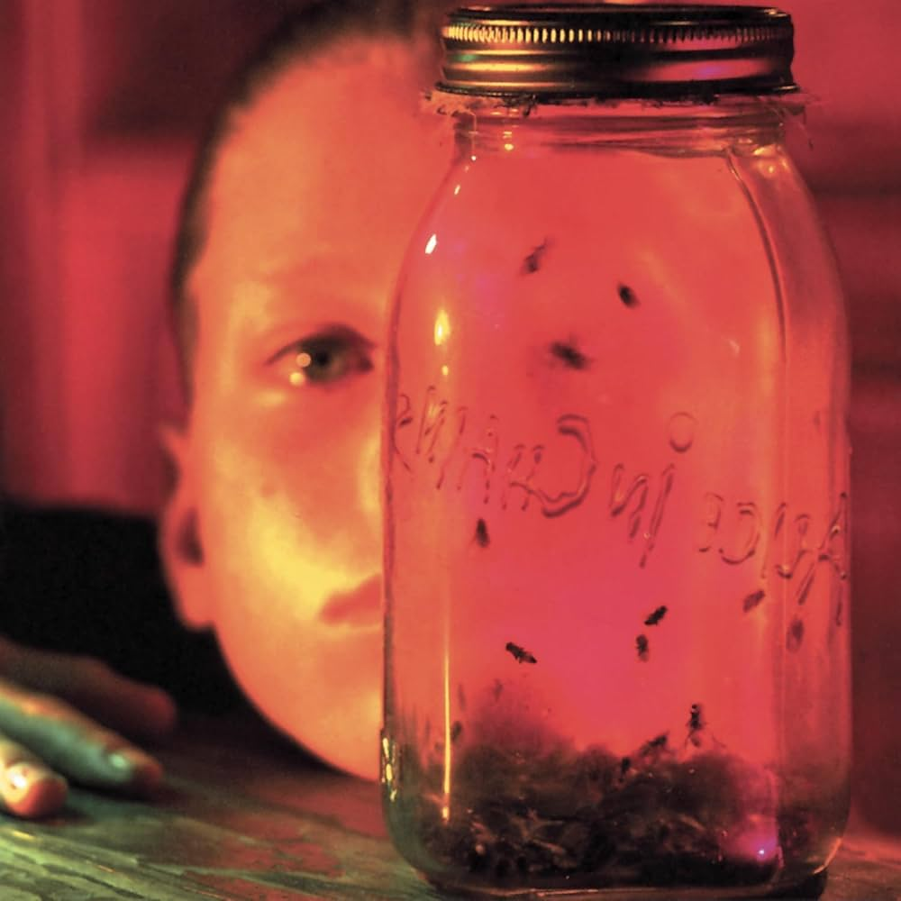
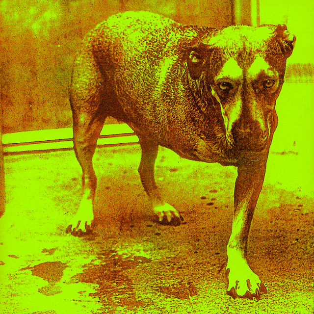
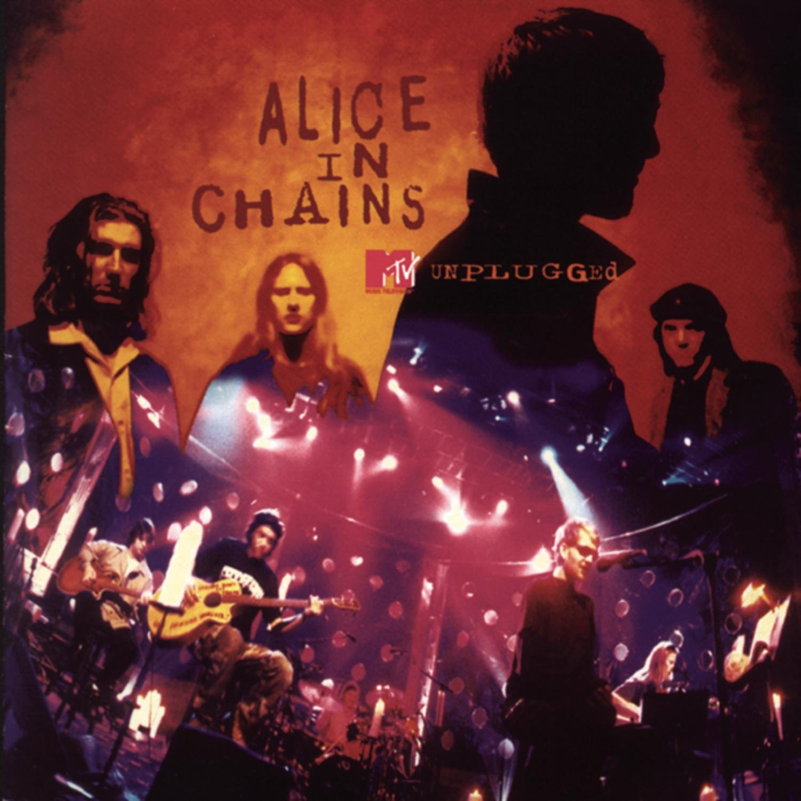
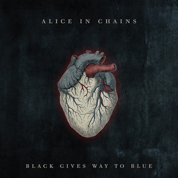
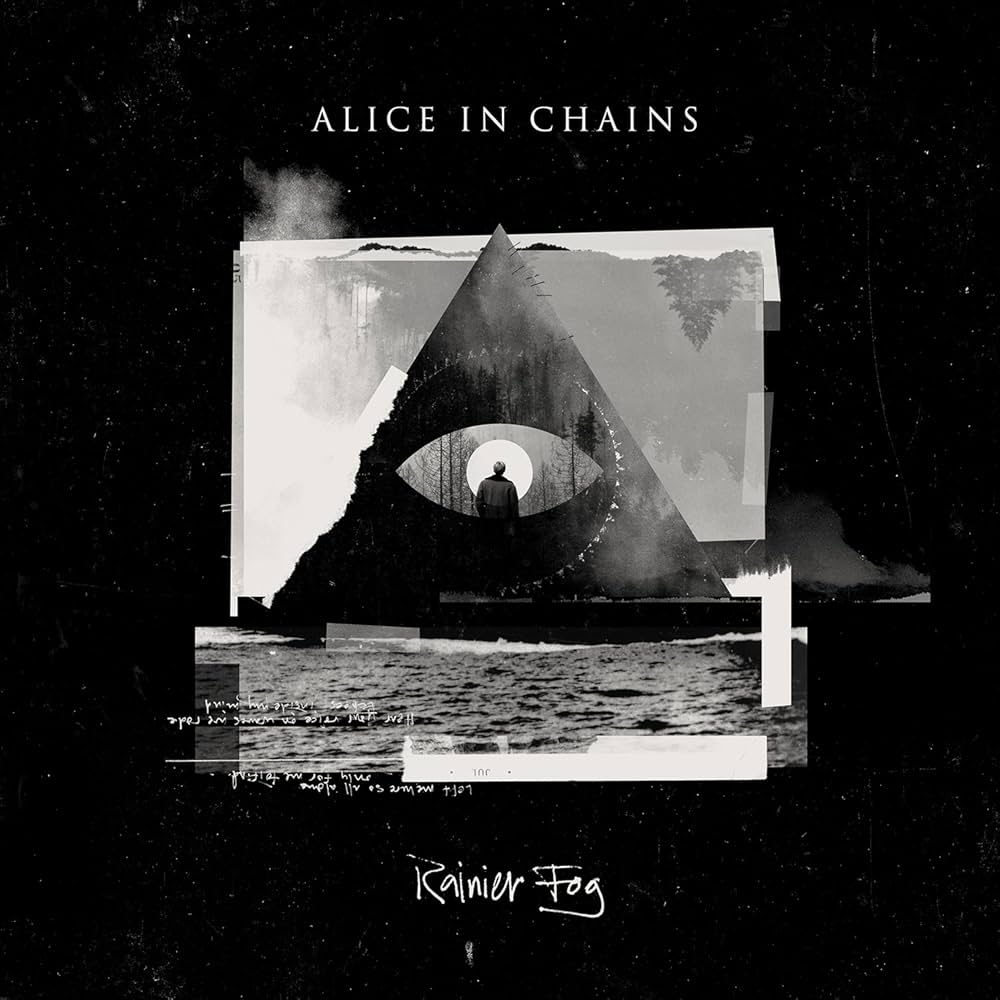

Discografia:
-
Facelift

-
Dirt

-
Jar of Flies

-
self-titled

-
MTV unplugged

-
Black Gives Way to blue

-
The Devil Put Dinosaurs Here
-
Rainier Fog

| Nome | Função | Data |
|---|---|---|
| Layne Staley | Vocalista | 1987 - 1996 |
| Jerry Cantrell | Guitarra & vocal | 1987 - Hoje |
| Mike Starr | Baixista | 1987 - 1993 |
| Mike Inez | Baixista | 1993 - Hoje |
| Sean Kinney | Baterista | 1987 - Hoje |
| Willian DuVall | Vocalista | 2006 - Hoje |